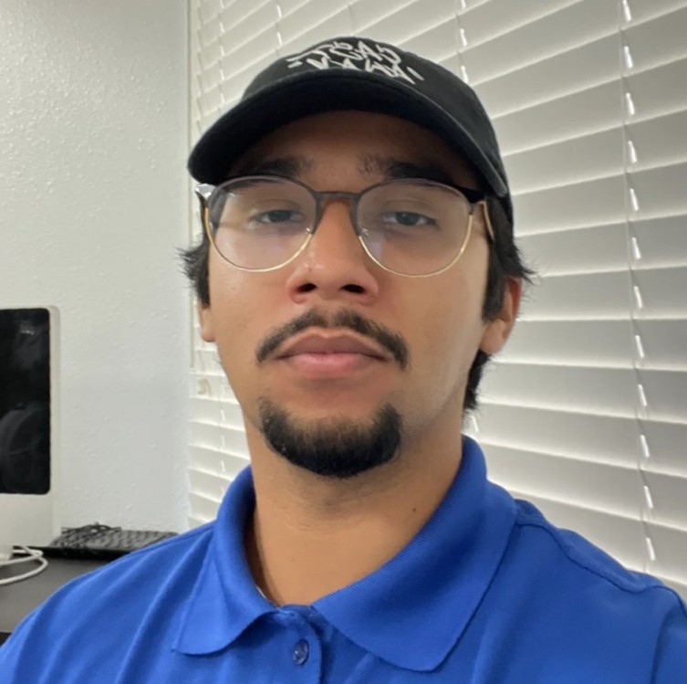

Brandon S. Ortiz
Skills
- Customer Service
- Food Safety and Hygiene
- Leadership, Team and Project Management
- Web Development
Education
Yorba Linda High School - High School Diploma
September 2015 - June 2019
Work Experience
Real Tacoz, Yorba Linda, Ca - Cashier
September 2019 - July 2020
- Basic math skills, handling cash/credit card transactions,
resolving customer problems and concerns, and bagging food accordingly.
Furai Chicken, Yorba Linda, Ca - Shift Lead
December 2021 - June 2022
- Started as a cashier, before expanding my role to include food preparation and cooking,
demonstrating flexibility and an ability to learn new skills rapidly.
Vexon Creative, Orange, Ca - Live-Build Technician
October 2022 - January 2024
- My role at Vexon Creative was managing client relationships and building high-end websites
utilizing the LiveBuild technique.
- Assist CEO in hiring new members of my division.
- Web Development proficiency in HTML, CSS, Javascript and other web development technologies.
- Experience with Content Management Systems (CMS) such as Wordpress, Wix, Shopify, etc.
- UX and UI design focusing in creating user-centric designs for enhanced website usability and engagement.
- Project Management proficiency in incorporating feedback from clients to refine and enhance the final product all while ensuring
timely and on-budget delievery.
Links
Hobbies
Contact